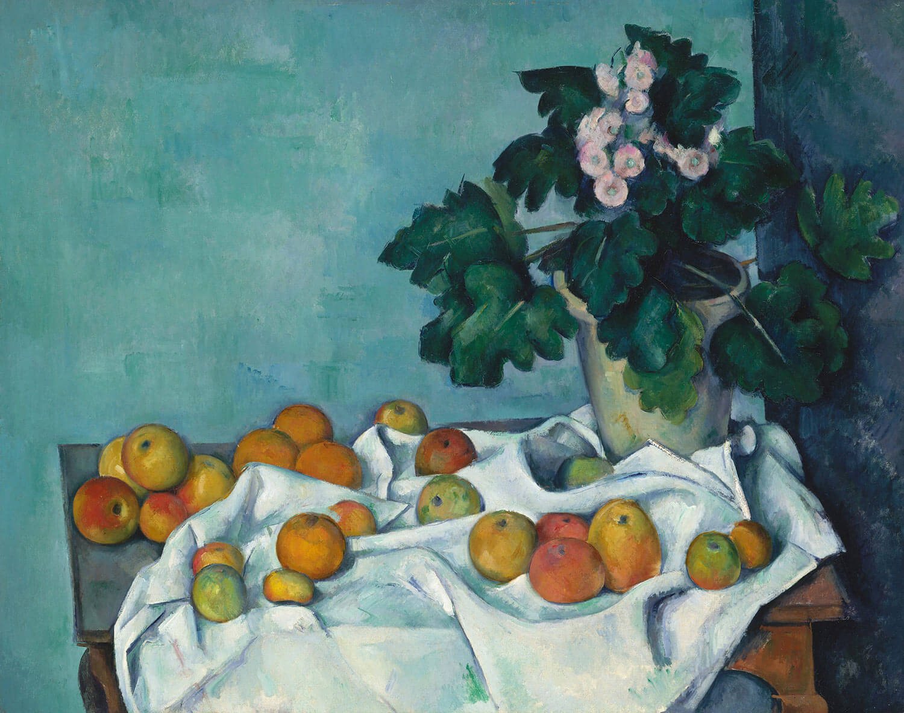

津贴与实习(26年更新🔥)
最后更新
本节目录
ROMA Lab Support Plan for Student Stipends & Internships
1. Background & Our Vision
In formulating our lab policies, we fully understand and respect the following realities:
- Regarding Internships: In our broader research group and department, there is a widespread and strict tradition of generally not allowing students to undertake external internships, with the intention of ensuring students can devote themselves fully to research.
- Regarding Stipends: Similarly, the traditional practice in the broader group is not to provide advisor stipends to first-year Master's students.
Our Choice & Commitment: Based on a deep understanding of the above context, ROMA Lab wishes to make some more flexible and supportive attempts. We believe rigorous research training and broad industry perspectives can complement each other, and stable support enables everyone to engage in research with greater peace of mind. Therefore, we have broken with convention to create this "Special Support Plan" for you. Its sustainability depends on our collective efforts and mutual trust moving forward.
2. Our Student Stipend System
Beyond the basic subsidies provided by the national government and university, the lab additionally allocates dedicated funds from research grants to establish the following Student stipends.
2.1 Research Kickstart Grant (First-Year Master's Students)
To support your smooth transition into research, we provide a "Research Kickstart Grant" of ≥200 RMB/month (A typical number: 600 RMB, according to our budget). This grant is intended as foundational support for your initial exploration and learning.
2.2 Formal Student Stipend (Master's from Year 2 & All PhDs)
As you become core contributors to the lab's research, our support level upgrades. Your monthly stipend consists of two parts:
- Part A-Base Stipend: Recognition of your stable contribution as a core lab member. Master's students: ≥400 RMB/month; PhD students: ≥1000 RMB/month.
- Part B-Performance Incentive: A dynamic reward for outstanding contributions, awarded based on objective assessments of your research breakthroughs, project contributions, and lab service.
2.3 Guidelines for Special Circumstances
- During External Internships: The base stipend will be paused during full-time external internships, as you will receive compensation from the host organisation.
- An Open Door for Communication: Should you encounter temporary financial difficulties at any time, please do not hesitate to discuss this with me privately, and we will work together to find a supportive solution.
3. Our Internship Support Program
We encourage and support you to undertake high-quality internships relevant to your research direction when your academic progress allows.
3.1 Prerequisites for an Internship
To ensure your thesis progress and internship experience are mutually reinforcing, the following conditions must be met before starting an internship:
- Solid Academic Foundation: Master's students must have completed their thesis proposal defense(开题答辩) and have largely finalized the core research content and key experimental/data results of their thesis. PhD students must have passed their qualifying/candidacy exam (开题答辩or one person one policy with the supervisor).
- Clear Plan: We must have jointly developed a clear "Individual Development Plan" outlining the internship role, learning goals, and a timeline for completing thesis writing.
- High-Quality Internship Role: The position should offer genuine professional development and be closely related to your field of study.
3.2 Our Shared Agreement (During Internship)
- Your Responsibilities: Adhere to the jointly agreed research plan to ensure steady thesis progress; maintain regular communication (e.g., monthly online meetings) to update on your progress.
- Our Support: The lab will proactively relieve you of the majority of routine lab duties; I will remain your primary advisor, providing continuous academic guidance.
3.3 Our Shared Vision: Building the ROMA Lab Brand
Our support for internships is not just for your individual growth but also carries a collective hope for the team. We hope every ROMA Lab member on an internship can serve as an "Ambassador" and "Chief Talent Officer" for our lab.
- Your Excellence is Our Brand: The recognition you earn through your professionalism, rigorous attitude, and collaborative spirit enhances the reputation of the "ROMA Lab" brand.
- Creating Sustained Opportunities: The positive impression you leave directly opens doors for your junior lab mates, making it easier for them to secure future opportunities.Let's work together to establish ROMA Lab as a renowned talent incubator in the industry.
3.4 A Small Request
As some of our support policies are distinctive within the broader research group, we kindly ask for your discretion to help maintain our supportive and flexible lab environment. When sharing your experiences on social media, please avoid disclosing specific details of our lab's policies. Your understanding in this matter is crucial for me to continue advocating for this flexibility.
4. Frequently Asked Questions (FAQ)
Q1: Is the performance incentive evaluation process transparent?
A: Yes. Evaluations are based on objective contributions across dimensions like research milestones, project work, and lab service. We encourage open communication about your work to ensure fairness.
Q2: What should I do if I have questions about my stipend?
A: We strongly encourage open and honest communication. Please feel free to schedule a one-on-one meeting with me to discuss any concerns.
Q3: How is "core research content largely finalized" defined?
A: It means your thesis has a solid, validated core innovation supported by key data/experimental results—a firm foundation for writing the core chapters. We recommend you consult with me at least 2 months before your intended internship start to confirm your status and plan.
Q4: How should we interpret "maintaining our lab environment"?
A: The core principle is to be "open within, discreet without." We encourage open discussion of all policies within the lab. However, when interacting with students from other groups, we advise against actively boasting about or explaining our lab's specific policies. Your discretion is the lifeline of this "Special Support Plan."
Closing: Let's Create Excellence Together
Subject: Welcome to ROMA Lab: Our Support Plan for RA Stipends & Internships
Dear ROMA Lab Members,
A very warm welcome to each of you as we embark on a new semester/academic year together!
At ROMA Lab, we are committed not only to pursuing cutting-edge research but also to fostering a supportive and transparent environment where every member can thrive. To this end, we have formalized our policies regarding Research Assistant (RA) stipends and internship support.
This document, the "ROMA Lab Support Plan for RA Stipends & Internships," outlines our collective framework. It is designed to ensure you have the clarity and support needed to excel in your research, while also exploring opportunities for your professional growth.
In this plan, you will find details on:
- Our tiered RA stipend structure, including the "Research Kickstart Grant" for first-year Master's students.
- Our commitment to ensuring your total stipend support is competitive within our department.
- Our supportive yet structured approach to internships, designed to help you gain valuable industry experience without compromising your thesis progress.
- Our shared vision for building the ROMA Lab brand together.
Please read this document carefully, as it will serve as our guiding reference. We encourage an open dialogue, so please feel free to reach out if you have any questions or would like to discuss anything further.
I am truly excited to work with each of you and look forward to achieving great things together.
Kind regards,
Dr. Xiangguo SUN (he/him)
ROMA Lab Lead
Young Chair Professor, Southeast University
Nanjing, Jiangsu Province, CN